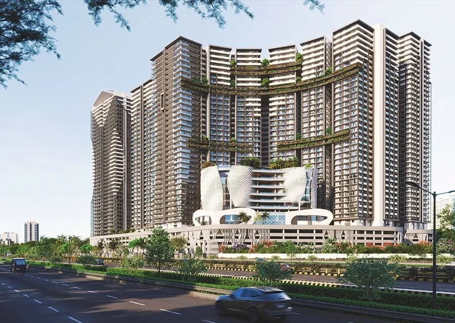
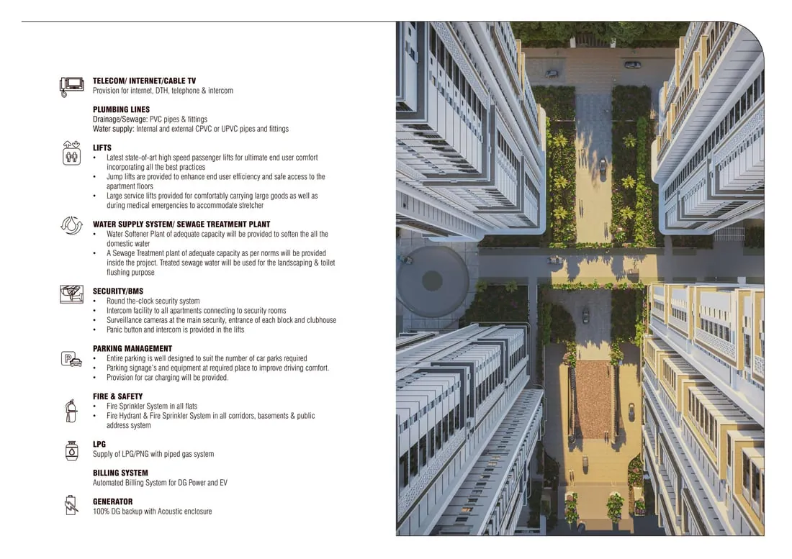

Area guides, 2026 price trends and straight-talking buyer how-tos for Kokapet, Narsingi, Neopolis, Manchirevula, Tellapur & Kollur — from the landlord-share desk.

A flagship Kokapet address by Rajapushpa Properties — price, configs, RERA and possession, plus the landowner-share route to the same flat for 8–14% less.
10 min read
A family-first township beside the Financial District from an on-time developer — price, configs, phased possession, and the landowner-share route to the same flat for 8–14% less.
10 min read
Certainty and no GST, or a lower price and more upside? The full ready-vs-under-construction comparison for Hyderabad buyers in 2026.
9 min read
Where to buy in 2026, ranked by goal — appreciation, rental income or value — across West Hyderabad, with indicative prices and the landlord-share saving.
10 min read
The three most-searched West Hyderabad corridors compared on price, yield, appreciation and commute — and which one fits your goal.
9 min read
The honest investment case for West Hyderabad in 2026 — the data, the corridors, the real risks, and how to improve your return from day one.
9 min read
Budget, area, verification, home loan, registration — the full step-by-step process for buying a flat in Hyderabad in 2026, done right.
11 min read
Yes — when the paperwork checks out. The registered JDA, sharing agreement, EC and Dharani/RERA checks that make a landlord share flat as safe as any other.
11 min read
Yes, banks fund them — when the file is clean. Eligibility, the approval process, documents, LTV, and the reasons landlord-share loans get rejected.
10 min read
The same flat, 8–14% cheaper — what landlord share flats are, whether they are safe, and how to buy one with the title and JDA allocation verified.
12 min read
The quiet pocket between Kokapet and Narsingi — near-premium location at a lower price, plus the landlord-share saving.
10 min read
West Hyderabad's value and investment frontier — the lowest entry on the corridor, big townships, and the landlord-share saving.
11 min read
West Hyderabad's value corridor — bigger homes for the money, 2026 prices, connectivity to Gachibowli, and the landlord-share saving.
11 min read
New gated-community flats on the ORR — 2026 prices, 2/3/4 BHK options and the landlord-share saving, with a safe buyer checklist.
10 min read
What flats near the Financial District really cost in 2026, why buyers pick the belt around it, and how landlord-share saves 8–14%.
10 min read
Why Kokapet has become West Hyderabad's most sought-after address, and how to buy smart in 2026.
6 min readHow buying the landlord's share can save you 8-14% on the same flat, and the checks that keep it safe.
7 min readIndicative 2026 per-sq.ft ranges across West Hyderabad's top corridors, and how to pick the right one for you.
8 min read
A practical, end-to-end guide for NRIs buying a Hyderabad flat remotely, from POA to title verification.
8 min read← swipe / scroll for more →